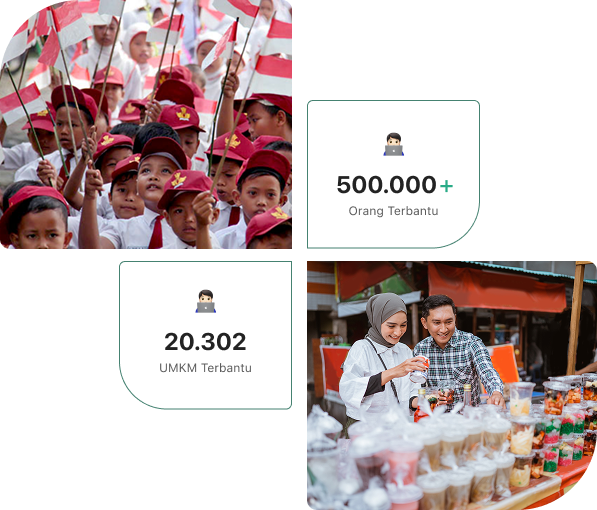
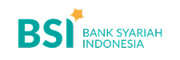
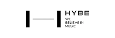

wujudkan indonesia emas dengan keterampilan digital
#SkillLocalImpact: Kuasai Keahlian yang Langsung Dibutuhkan Pasar Kerja di Daerahmu.

bagaimana alur
jobskill?
pilih kelas yang paling
kamu minati.
Temukan dan ikuti kelas yang paling sesuai dengan minat dan skill kamu, untuk membantu umkm tumbuh.
gabung ,kelas dapatkan
mentor, kuasai skill.
Ikuti kelas pilihanmu: kuasai skill impian bersama mentor ahli dan wujudkan dampak untuk UMKM lokal.
terapkan skill kamu
kepada UMKM.
Keahlian yang relevan dengan lokasi usaha dapat menjadi pendorong utama bagi perkembangan UMKM kamu.
rekomendasi berdasarkan lokasi sekitarmu
tingkatkan ekosistem UMKM disekitarmu! temukan kelas-kelas strategis berdasarkan lokasimu untuk bersama-sama memajukan usaha lokal.
21 materi
digital online seller
(321 Reviews)
sertifikat
24 materi
social media marketing
(432 Reviews)
sertifikat
20 materi
marketing office
(211 Reviews)
sertifikat
rekomendasi
pekerjaan
Temukan rekomendasi pekerjaan untuk kelas yang kamu ikuti, berikut riset pekerjaan untuk sertifikat kamu nantinya disini.
social media marketing
Kedai Kopi Nusantara | F&B
Membantu merancang strategi promosi digital di Instagram dan TikTok. Membuat caption, story, dan analisis hasil kampanye.
seller produk kecantikan
glowHerb beauty | beauty & health
Menjual produk skincare alami buatan lokal melalui media sosial atau WhatsApp. Dapat bonus penjualan setiap 10 produk.
data analysis
RS. keluarga indonesia | health
Menganalisa data pemasukan pengeluaran kebutuhan rumah sakit. Menginput data
teks kosong
tantangan 3T dengan inovasi: solusi digital untuk indonesia yang merata.
Teknologi mengubah tantangan daerah 3T menjadi peluang. Melalui solusi digital seperti e-learning dan telemedicine, kami wujudkan Indonesia yang terhubung dan setara.
skill tepat
sasaran
Skill digital yang langsung dibutuhkan oleh UMKM dan industri unggulan di daerah anda.
Bukti Kerja
Nyata
Modul akan diakhiri dengan Proyek Praktis yang disimulasikan dari tantangan UMKM.
sertifikasi
terverifikasi
Micro-Credential digital yang diverifikasi. Profil Kamu menjadi Indeks SDM yang kredibel.
skill kamu, kekuatan
ekonomi lokal.
Kuasai skill lokal, wujudkan dampak global. Bekal ini membuka dua jalan: berkarier di garis depan atau menggerakkan ekonomi daerah sebagai pionir wirausaha.
profesional
Profesional dalam bekerja untuk membantu pertumbuhan UMKM lokal.
berdampak
Berdampak terhadap pertumbuhan ekonomi dan UMKM setempat.
membantu
Membantu UMKM tumbuh dengan skill yang kamu kuasai.
apa kata mereka tentang jobskill?
Senang banget akhirnya bisa belajar di Jobskill. Materinya bagus banget dan diajarin oleh mentor yang expert. Aku dibimbing untuk bisa langsung terjun membantu UMKM. Overall, pengalamannya sangat memuaskan!
carmen
mahasiswi universitas jakartaSistem belajarnya gampang banget dicerna! Apalagi pas tantangan akhir kelas, kita langsung ditantang untuk cari dan bantu UMKM sekitar. Seru banget! Jadi, skill yang kita punya bisa langsung dipakai untuk bantu UMKM Indonesia makin berkembang.
kirana
product seller di cafe kwangyaSaya sangat merekomendasikan kelas-kelas di Jobskill. Semua materi pembelajarannya sangat berkualitas. Selain itu, Jobskill juga memberikan tantangan langsung untuk membantu UMKM sekitar tumbuh, yang nantinya ketika menyelesaikan tugas akan dapat uang.
ningning
seller host livetertarik untuk berkolaborasi &
membantu dampak positif?
Dengan dukungan lebih dari 200 perusahaan, Jobskill aktif membentuk masa depan pendidikan di Indonesia yang lebih relevan dengan dunia kerja.

